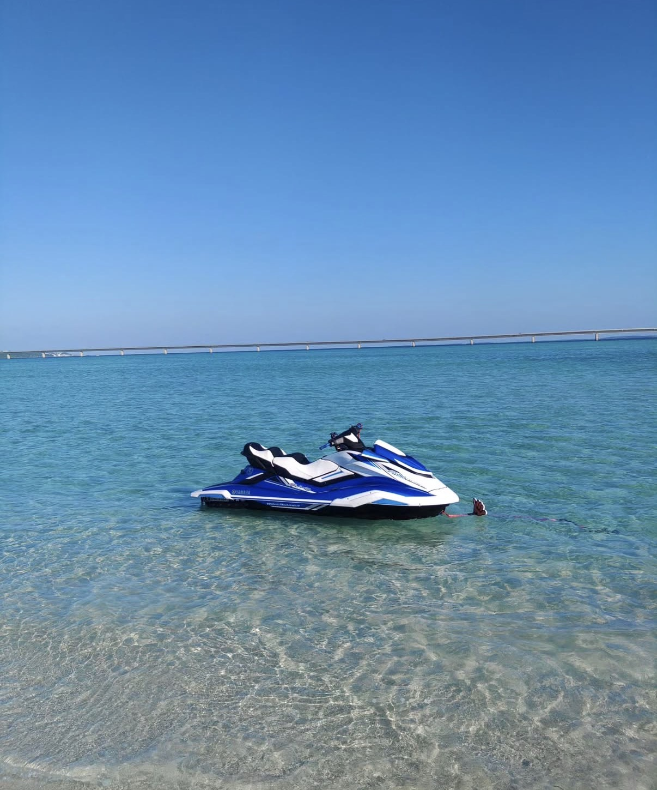
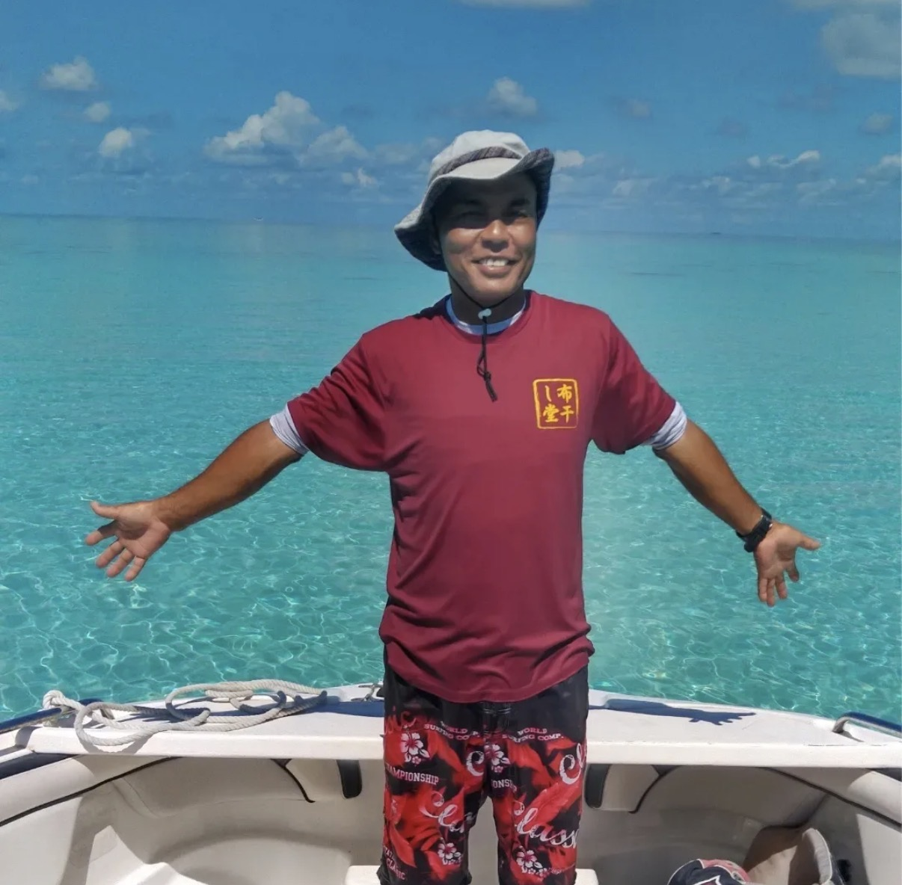
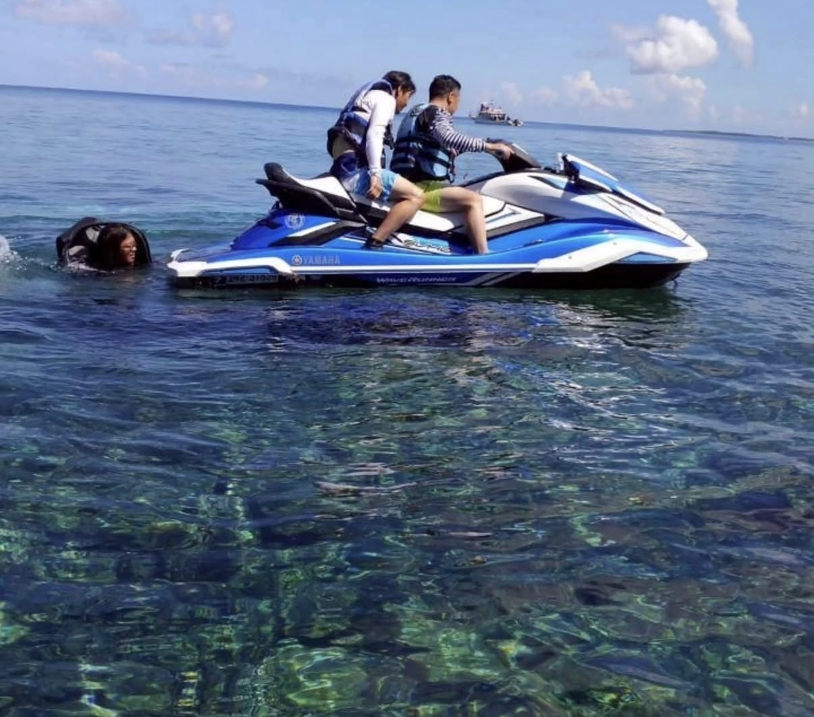
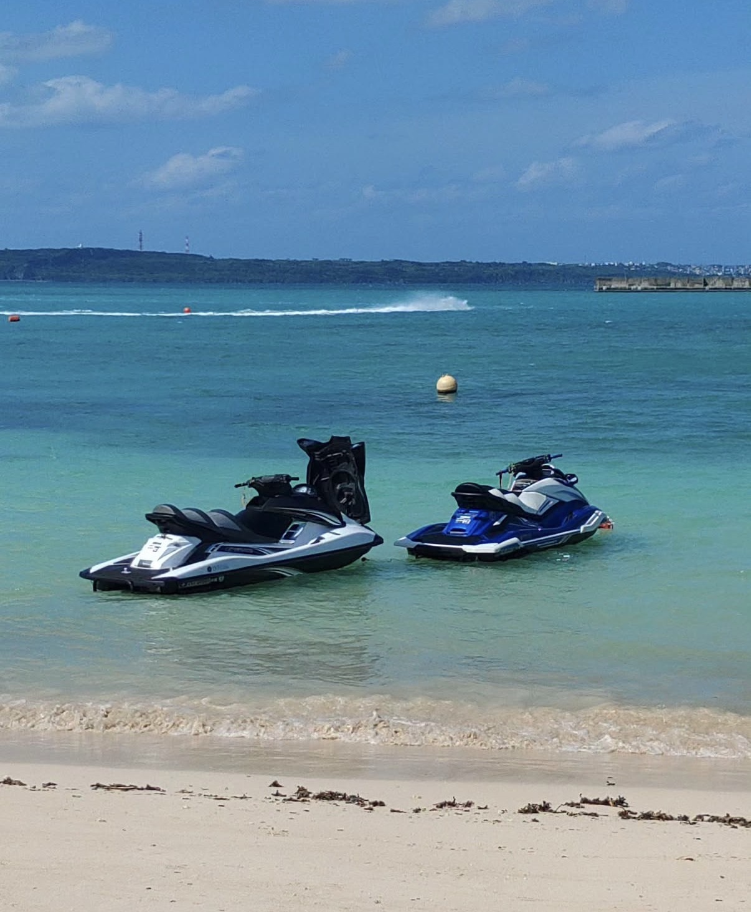

NII Marineニーマリン
NIIマリン

A locally run marine service in Miyakojima, created by a family rooted in the island and its way of life. NII Marine offers ocean experiences that are simple, safe, and deeply connected to the natural beauty of Miyakojima. From jet skiing to time spent out on the water, each moment is shaped by local knowledge and a genuine love for the sea. More than just an activity, it’s an invitation to experience Miyakojima from the perspective of those who call it home.
宮古島にルーツを持つ家族が運営するマリンサービス。 NIIマリンは、シンプルで安心できる海の体験を通して、宮古島の自然の美しさを感じられる時間を提供しています。 ジェットスキーなどのアクティビティも、地元ならではの知識と海への想いが込められています. ただの体験ではなく、 島に暮らす人たちの視点から宮古島を感じられるひとときです。
Why We Recommend Itおすすめする理由
Chosen for visitors who want to experience Miyakojima from the water with energy, care, and a clear connection to the ocean.
宮古島の海をより近くで楽しみたい方へ、海とのつながりや安心感を大切にしながら紹介しています。
Activities アクティビティ
Enjoy jet skiing and a variety of marine activities in Miyakojima’s crystal-clear ocean.
宮古島の透き通った海で、ジェットスキーや様々なマリンアクティビティを楽しめます。
Photos 写真




Location 場所
Phone
070-4212-5763
電話番号：070-4212-5763
📞 Call Now 電話する 📍 Googleマップで見る Open in Google Maps 📷 Instagram インスタグラム 🌐 Website 公式サイト宮古島の事業者さまへFor Miyakojima Businesses
お店やサービスを、英語と日本語で丁寧に紹介しませんか？
My Miyakojimaでは、宮古島の事業者さま向けに、雰囲気やストーリーまで伝わる紹介ページを制作しています。観光で訪れる方にも、島に住む方にも届くように、英語と日本語の両方で掲載できます。
My Miyakojima creates curated bilingual feature pages for selected local businesses, helping visitors understand your story before they contact you.
掲載・制作の相談をするContact My Miyakojima